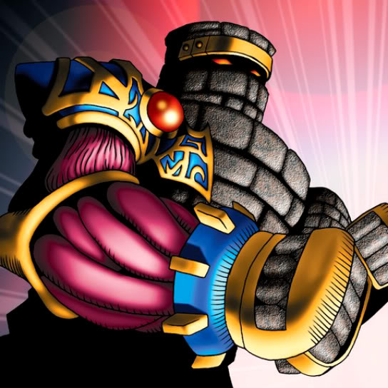

Destroyer Golem

STATS
ATK: 1500
DEF: 1000DECK COST
Deck Cost per Card: 25Fusion List (3 Possible Fusions)
- Destroyer Golem + Warrior of Tradition = Mystical Sand
- Destroyer Golem + Water Magician = Mystical Sand
- Destroyer Golem + Wicked Dragon with the Ersatz Head = Stone D.